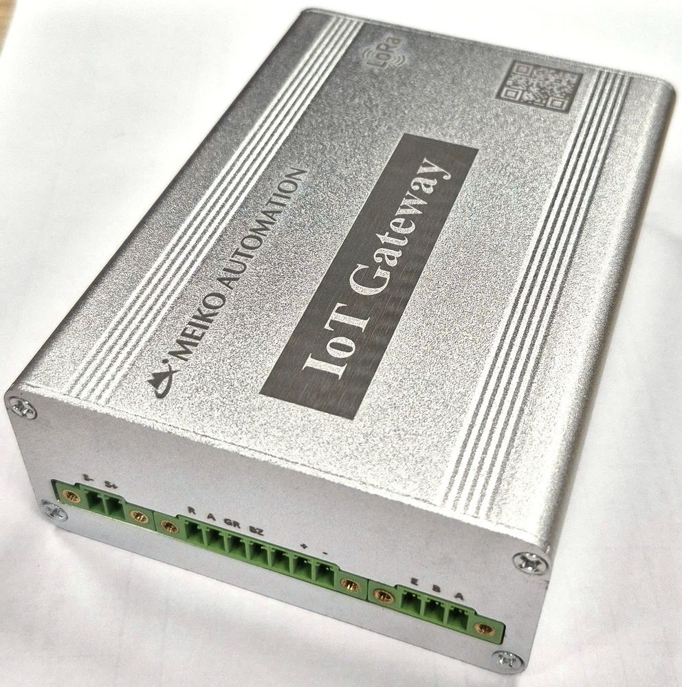
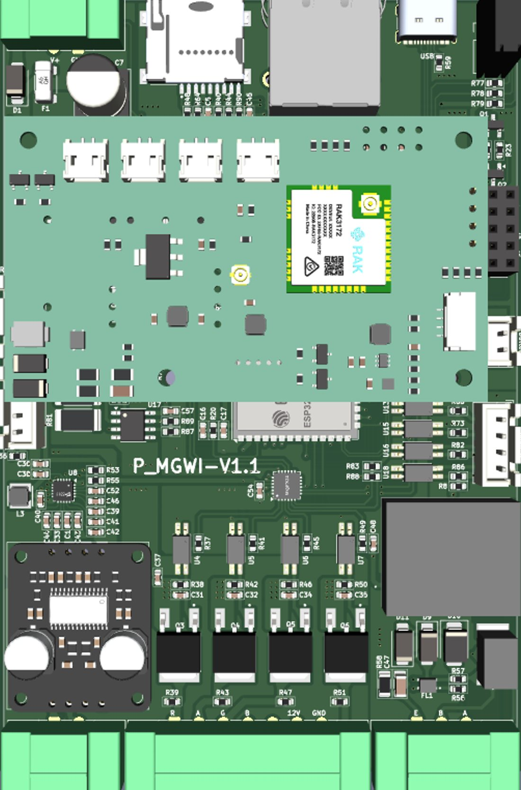

MGWI-V1 Gateway kết nối máy chủ AI, MQTT, Modbus và thiết bị cảnh báo IP.
MGWI-V1 là gateway cảnh báo IoT cho nền tảng cảnh báo công nghiệp. Tài liệu mô tả các kết nối Ethernet, WiFi và RS485 Modbus, cùng nguồn PoE/12V và quản lý thiết bị.
Nội dung tạm: thông tin sản phẩm đang được hoàn thiện và cần xác nhận cùng đội kỹ thuật.

Điểm chính
- 01
Kết nối đa dạng
Kết nối Ethernet RJ45, WiFi và Modbus RS485 cho thiết bị hiện trường.
- 02
Gateway cảnh báo
Kết nối máy chủ AI, MQTT broker, thiết bị Modbus và các đầu cuối cảnh báo IP.
- 03
Nguồn dự phòng
Nguồn PoE 802.3af/at và nguồn dự phòng 12V được nêu trong tài liệu.
- 04
Bảo vệ đầu vào
Tài liệu nêu ngưỡng bảo vệ cao áp 27 V, thấp áp 7 V, quá tải 3,8 A và chống ngược áp.
Thông số kỹ thuật
Thông số được trích từ tài liệu kỹ thuật của Meiko. Dòng ghi "dự kiến" cần được xác nhận cùng đội kỹ thuật cho cấu hình cụ thể.
Ứng dụng
- Kết nối thiết bị cảnh báo trong nhà máy thông minh
- Tích hợp CCTV-AI và máy chủ AI
- Tích hợp thiết bị Modbus tại hiện trường
| Loại thiết bị | IoT Alert Gateway | Thông số dự kiến — cần xác nhận |
|---|---|---|
| Nguồn cấp | PoE 802.3af/at + 12V dự phòng | Thông số dự kiến — cần xác nhận |
| Công suất tiêu thụ | 25 W | Thông số dự kiến — cần xác nhận |
| Mạng | Ethernet RJ45 + WiFi | Thông số dự kiến — cần xác nhận |
| Giao tiếp công nghiệp | Modbus RS485 | Thông số dự kiến — cần xác nhận |
| Bảo vệ cao áp | 27 V | Thông số dự kiến — cần xác nhận |
| Bảo vệ thấp áp | 7 V | Thông số dự kiến — cần xác nhận |
| Bảo vệ quá tải | 3.8 A | Thông số dự kiến — cần xác nhận |
| Kích thước | 120 × 88 × 38 mm | Thông số dự kiến — cần xác nhận |
Hình ảnh




Sản phẩm liên quan


Cần cấu hình cho dự án của bạn? Trao đổi với đội kỹ thuật Meiko.
Yêu cầu tư vấn / báo giá